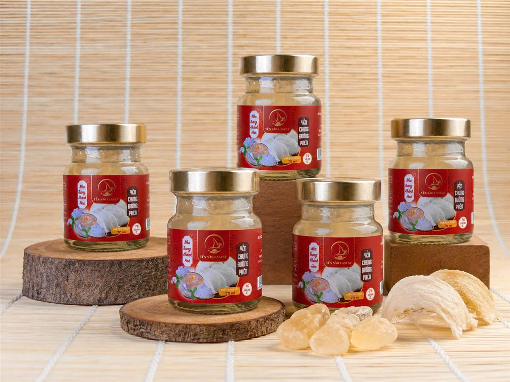
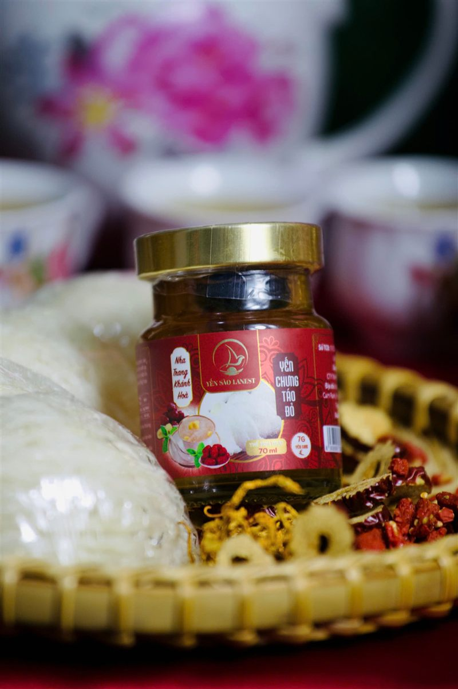

Yến Sào Cho Người Mới Ốm Dậy, Sau Phẫu Thuật: Dùng Thế Nào Cho Đúng
Yến Sào Lanest · Đăng ngày 20/10/2026

Người nhà vừa xuất viện, câu đầu tiên cả nhà hay hỏi là: giờ nên mua gì để bồi bổ? Yến sào thường nằm đầu danh sách. Bài này nói rõ cách dùng yến sào cho người mới ốm dậy và người sau phẫu thuật: việc gì phải làm trước, dùng bao nhiêu, lúc nào, và những điều Lanest không dám hứa.
Yến chưng đường phèn, vị được tài liệu sản phẩm của Lanest ghi là hợp với người mới ốm dậy
1. Việc đầu tiên: hỏi bác sĩ, nhất là sau phẫu thuật
Yến sào là thực phẩm, không phải thuốc và không thay thế thuốc chữa bệnh. Người vừa mổ, vừa điều trị xong thường có chế độ ăn riêng do bác sĩ dặn: lúc nào được ăn lại, ăn loãng hay đặc, có phải kiêng đường không. Vì vậy, trước khi cho người thân dùng yến, anh chị nên hỏi bác sĩ điều trị mấy điều:
- Đã ăn được yến chưa, hay cần đợi thêm?
- Có cần hạn chế đường không? Yến chưng thường có đường phèn, mà đường phèn cũng là đường.
- Người bệnh đang dùng thuốc gì, có cần lưu ý gì khi ăn thêm thực phẩm bồi bổ không?
Mang theo hũ yến hoặc nhãn thành phần cho bác sĩ xem là cách nhanh nhất. Với người sau phẫu thuật, đừng bỏ qua bước này.
2. Vì sao nhiều gia đình chọn yến để bồi bổ
Theo tài liệu tổng quan của Lanest, trong 100g tổ yến có khoảng 45–55% protein, 18 loại axit amin và 31 nguyên tố vi lượng như canxi, sắt, magie, kali, kẽm. Trong mục "ai nên dùng yến", cẩm nang của Lanest có nhắc tới người sau phẫu thuật, người sau ốm và người sức khỏe yếu.
Nhưng cẩm nang cũng nói thẳng một điều: yến không phải "thần dược tức thì", và chỉ có ích khi được dùng đúng. Lanest không hứa người bệnh sẽ khỏe lại nhanh hơn nhờ yến. Yến là một món ăn bồi bổ trong cả chế độ ăn uống, nghỉ ngơi, điều trị mà bác sĩ đã đặt ra.
Chị Lê, người sáng lập Lanest, nói về câu slogan "Trao sức khỏe, trao yêu thương" như sau:
"vì là sức khỏe là một cái món quà quý giá nhất mà không có cái tiền nào mà có thể mua được và mình cũng muốn gửi gắm đến những cái người thân yêu là nó còn quý hơn cả tiền bạc nữa."
Mua yến cho người thân đang ốm là đúng tinh thần đó. Chỉ cần dùng cho đúng.
3. Dùng bao nhiêu, vào lúc nào?
Cẩm nang dùng yến của Lanest có một dòng dành riêng cho người lớn tuổi hoặc người cần phục hồi:
| Tần suất | Khoảng 3 lần/tuần là đủ |
| Thời điểm | Sáng sớm hoặc buổi tối, khi bụng nhẹ |
| Tránh | Ăn yến ngay sau bữa chính; đun sôi trực tiếp |
| Cách dùng | Đều đặn, kiên trì, không ăn dồn dập rồi bỏ ngang |
Người mới ốm dậy thường ăn uống còn yếu. Lần đầu nên cho dùng lượng nhỏ, xem người bệnh ăn có hợp không rồi mới tăng dần. Lượng cụ thể nên theo lời bác sĩ, vì mỗi người mỗi bệnh mỗi khác.
4. Tự chưng ở nhà hay mua yến hũ?
Nếu tự chưng: luôn chưng cách thủy, lửa nhỏ, không đun sôi trực tiếp. Cẩm nang yến chưng táo đỏ của Lanest, món được ghi là dùng để bồi bổ sau ốm, sau phẫu thuật, có công thức như sau:
- Nguyên liệu: 5g tổ yến tinh chế, 3–5 quả táo đỏ khô, 200ml nước tinh khiết, 1–2 muỗng đường phèn.
- Ngâm yến khoảng 30 phút cho nở mềm. Rửa sạch táo đỏ, khía nhẹ.
- Cho táo đỏ và nước vào chén chưng trước khoảng 10 phút, sau đó cho yến vào chưng thêm 20–25 phút, lửa nhỏ.
- Gần xong mới cho đường phèn, khuấy nhẹ. Người phải kiêng đường thì giảm hoặc bỏ đường.
Yến tự chưng chưa dùng hết thì để ngăn mát và dùng trong 1–2 ngày, nên chưng vừa đủ. Xem thêm bài yến chưng táo đỏ hạt chia và hướng dẫn chưng yến đúng cách.

Hũ yến chưng táo đỏ bên tổ yến tinh chế và táo đỏ khô
Nếu mua yến hũ: người chăm bệnh vốn đã mệt, yến hũ đỡ được khâu ngâm, chưng, rửa. Dòng yến hũ 7g yến tươi của Lanest dùng ngay được, hoặc chưng cách thủy lại nếu muốn ấm. Hũ đã mở nắp thì phải bảo quản lạnh.
5. Chọn vị nào cho người mới ốm dậy?
Tài liệu mô tả sản phẩm của Lanest ghi từng vị phù hợp với ai. Những vị liên quan:
| Vị | Tài liệu sản phẩm ghi phù hợp với |
| Đường phèn | Mọi đối tượng, người mới ốm dậy |
| Táo đỏ | Người mệt mỏi, người cần bồi bổ |
| Long nhãn | Người suy nhược |
| Đường ăn kiêng, Đông trùng hạ thảo ăn kiêng | Người cần kiểm soát đường huyết (dùng đường isomalt thay đường phèn) |
Muốn một hũ đậm yến hơn, dòng Tổ Yến Chưng Nguyên Chất 100% có 1,5g tổ yến mỗi hũ, tương đương 15g yến tươi, chỉ gồm nước tinh khiết, tổ yến, đường phèn và nguyên liệu theo vị, không chất phụ gia. Dòng này có 3 vị: đường phèn, đông trùng hạ thảo, gừng.
Dù chọn vị nào, người đang điều trị bệnh, đặc biệt người tiểu đường, vẫn nên hỏi bác sĩ trước.
6. Mang yến đi thăm người ốm: vài điều nhỏ
- Hỏi người nhà xem bác sĩ đã cho người bệnh ăn yến chưa, có phải kiêng đường không, rồi hãy chọn vị.
- Xem hạn sử dụng in trên hũ, trên hộp. Hũ, hộp phải nguyên vẹn, tem niêm phong còn nguyên.
- Người nhà thích tự chưng thì chọn yến tinh chế, Lanest đóng hộp 50g và 100g. Hộp yến khô cất nơi khô ráo, đậy kín, không cần tủ lạnh.
Nếu người bệnh là ông bà, cha mẹ lớn tuổi, anh chị xem thêm bài yến sào cho người cao tuổi.
Câu hỏi thường gặp
Mới mổ xong bao lâu thì ăn yến được?
Lanest không đưa ra mốc thời gian, vì việc này tùy loại phẫu thuật và tình trạng từng người. Anh chị hỏi bác sĩ phẫu thuật hoặc bác sĩ điều trị trước khi cho người bệnh dùng.
Người mới ốm dậy ăn yến mỗi ngày có tốt hơn không?
Không cần. Cẩm nang của Lanest ghi người cần phục hồi dùng khoảng 3 lần/tuần là đủ, quan trọng là đều đặn. Ăn nhiều không có nghĩa là khỏe nhanh hơn.
Người tiểu đường vừa ốm dậy có dùng yến được không?
Phải hỏi bác sĩ trước. Nếu bác sĩ đồng ý, nên tự chưng ít hoặc không đường, hoặc chọn vị dùng đường isomalt thay đường phèn.